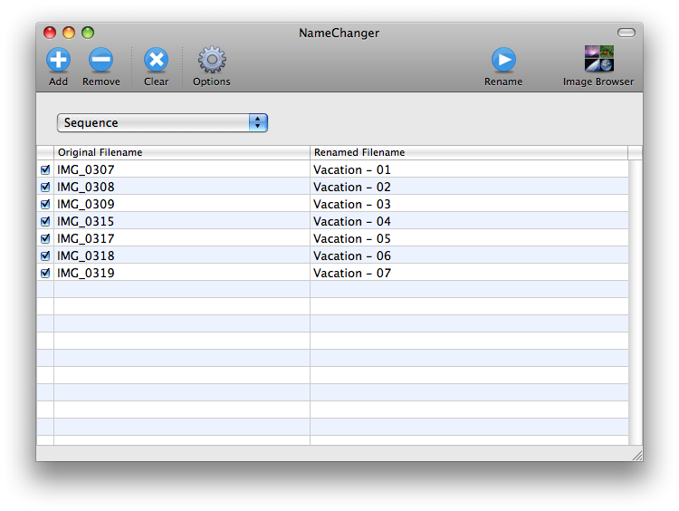

Seqeuence
Type:
Sequence Rename
Sequence
renaming provides a way to change filenames to contain an index number.
The options for controlling the sequence appear in a separate
dialog that appears when Sequence
is selected as the rename type.
A sequence can be appended, prepended or can be used to replace
each filename entirely. A sequence is made up of two parts: the
sequence name and the index digits. The sequence name can be
placed before or after the index digits. (i.e. - Image-001.JPG vs
001-Image.JPG) The number of digits to use for the index can be
specified from 1-6 (1, 02, 003, 0004, 00005, 000006). The number
to start the index at can also be selected.
Sequence renaming offers four ways to sort your filenames, before applying a sequential rename:
-
Custom
- Allows you to drag and drog to rearrange the order any way you choose.
-
Alphabetical
- Sorts the filenames alphabetically, the path is ignored.
-
File Date
- Sorts by the file modification date for each file.
-
EXIF Date
- Sorts by the date from the EXIF information (if present) for each file.
For all sort types except Custom, you can choose to sort the values Ascending or Descending
To avoid changing file extensions, the Hide Extensions
option can be used.

